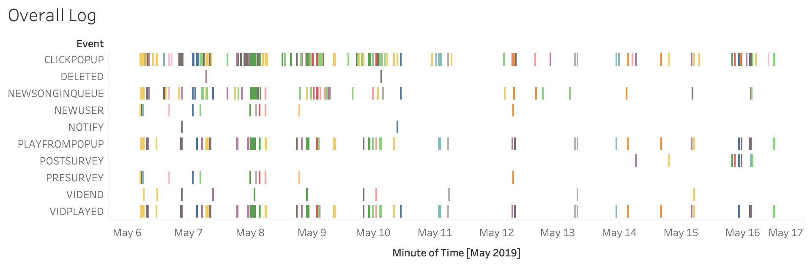
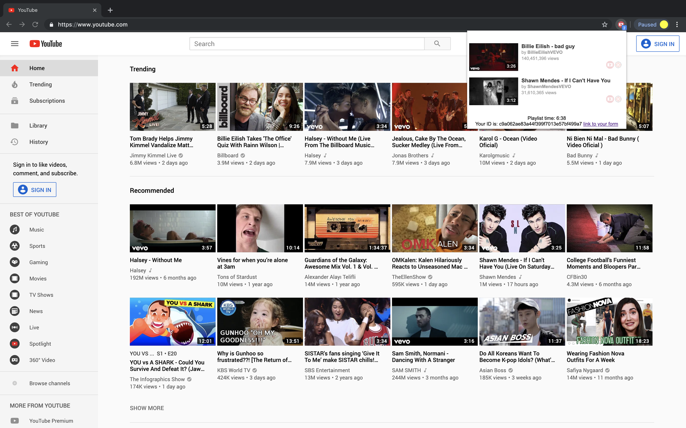
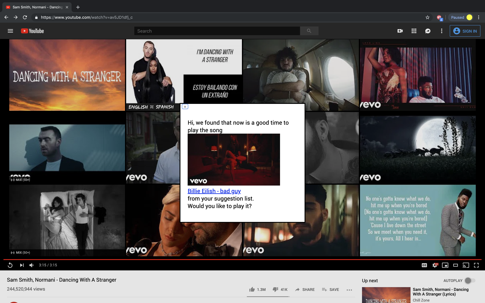

Tossaporn Saengja
tsaengja@mit.edu
MIT EECS 2019
cv
linkedin
github
I competed in International Olympiad in Informatics (IOI 2013)
The following are some designs and visualizations I worked on
DeWolfe Payment App
A universal payments platform which allows users holding any cryptocurrency
to make direct purchases at real-world merchants.
A Song for Me: A Music Sharing Tool
A Chrome extension that lets the users create the ”Up Next” feature on
YouTube with handpicked songs from their friends. Below are screenshots and
usage data from 13 participants.



Network Wrangler
An interactive network data processing and visualization tool.